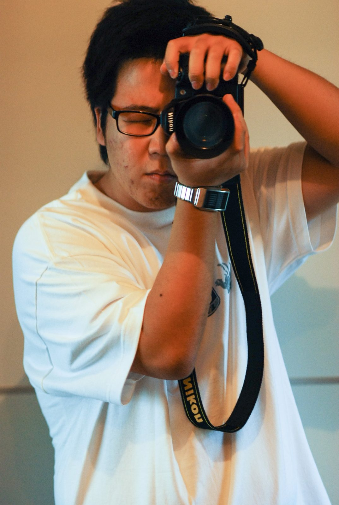
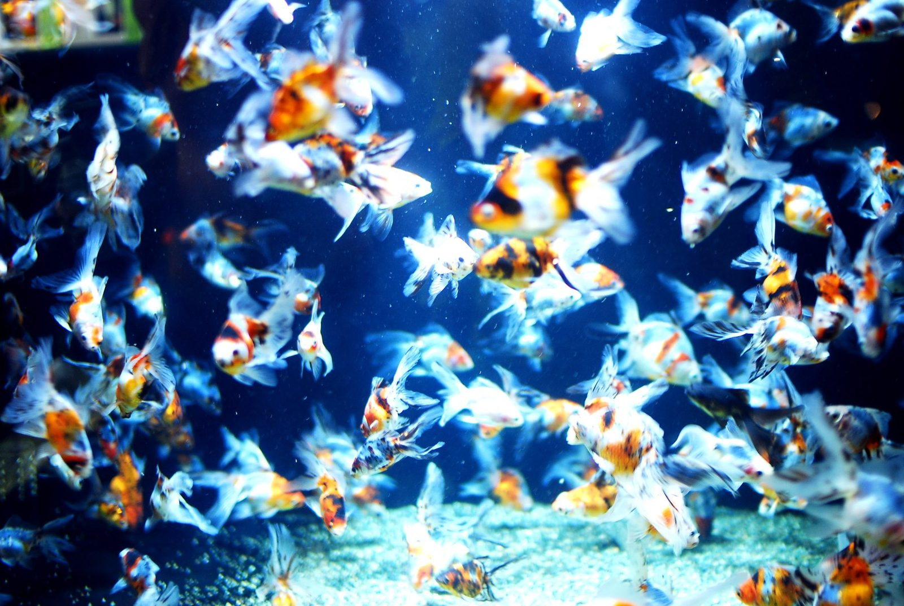
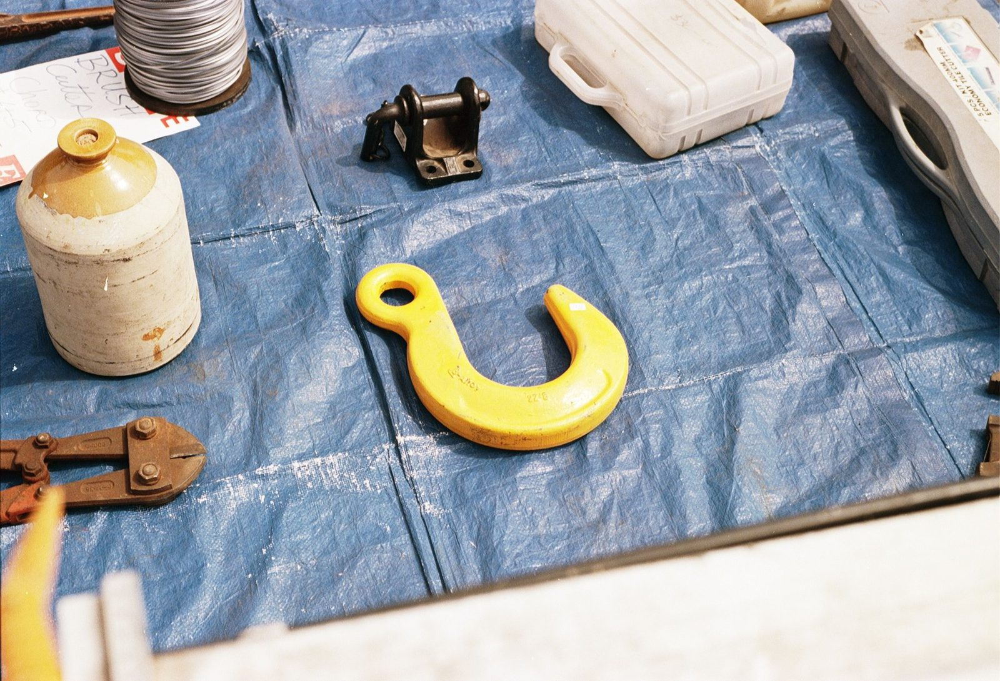
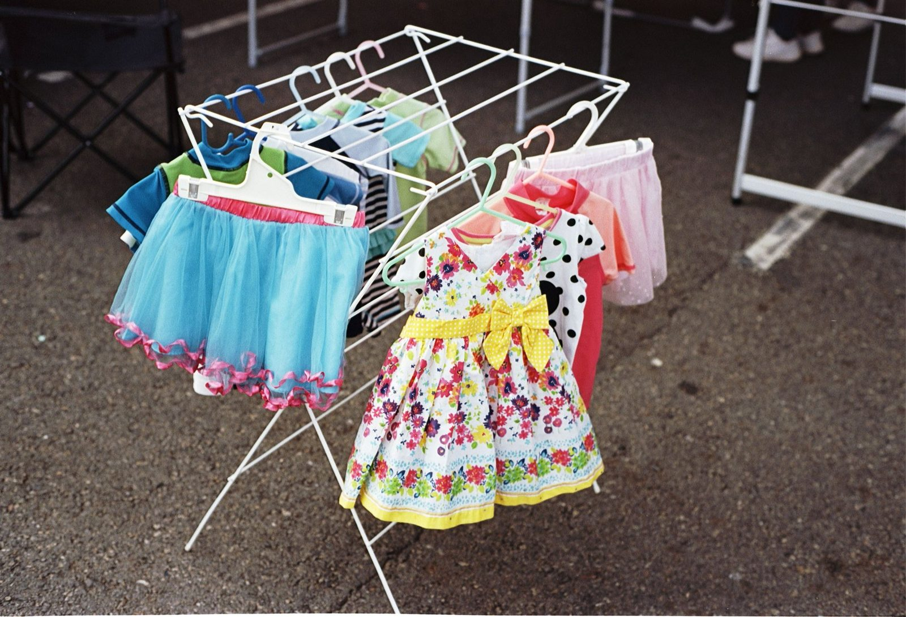
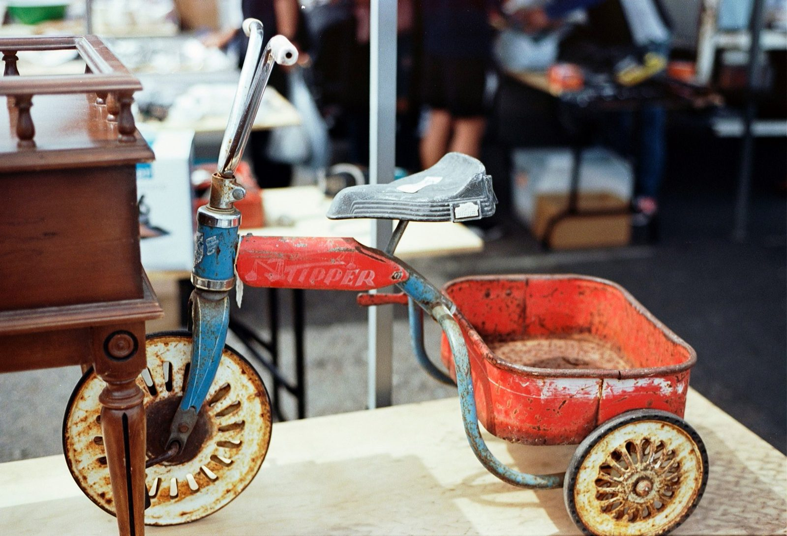
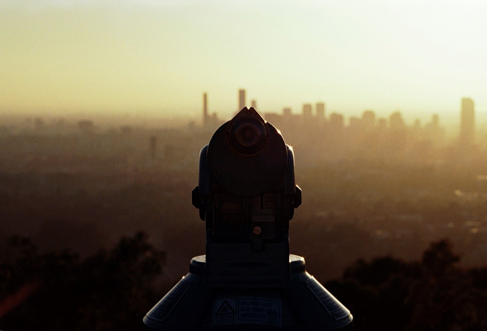
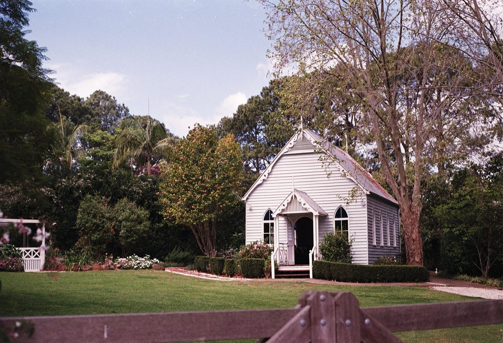
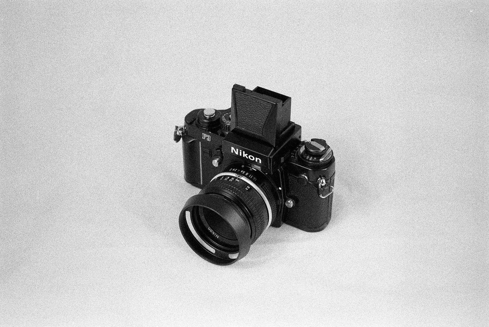

필름을 하시는 분도, 필름을 하지 않는 분도 한 번쯤은 그런 생각을 해보셨을 겁니다. "저 사람은 왜 굳이 필름을 쓰지?"
첫 글로 뭘 써볼까 고민하다가, 결국 저는 왜 필름을 쓰는지에 대한 이야기를 해보려고 합니다.
니콘 FM2 와 은빛 동경
제가 처음 필름카메라에 끌렸던 건 친구가 들고 다니던 니콘 FM2 때문이었습니다. 그때는 똑딱이 디카가 유행하던 시절이라, 배경 흐림이 가능했던 필름카메라의 결과물도 좋았고, 은색의 기계식 필름카메라가 너무 예뻤던 것 같습니다.
그리고 예전에는(라떼는) 카메라 자체가 지금처럼 쉽게 만질 수 있는 물건도 아니었고, 뭔가 비싸고 특별한 느낌이 있었잖아요. 그래서 자연스럽게 카메라, 특히 필름카메라에 대한 동경 같은 게 생겼던 것 같습니다.
용산에서 손에 쥐어진 D80
처음 사진을 시작할 때도 사실 니콘 FM2 로 시작하고 싶었는데, 용산에 카메라를 사러 갔더니 사장님이 "이제 필름 안 써요, 디지털이 대세입니다" 하면서 그냥 니콘 D80 을 쥐어 주셨습니다.
이때는 용산이 무서운 곳이었기 때문에 저는 그냥 디지털로 사진을 시작하게 됐습니다. ㅋㅋ


다시 필름으로, F3
그러다가 한 10 년쯤 지나고 나니까 문득 색감에 대한 궁금증이 생기더라고요. "필름은 원래 어떤 색이었을까?" 하는 생각이었습니다. 그 궁금증 때문에 니콘 F3 를 하나 들이면서 본격적으로 필름을 시작하게 됐습니다.
필름을 써보니까 제일 좋았던 건 결과물 자체보다도 그 과정 이었습니다. 촬영할 때의 느낌, 기계를 만지는 감각, 그리고 찍고 나서 바로 볼 수 없는 그 기다림까지요.


기다림이라는 시간 여행
디지털은 찍으면 바로 보이는데, 필름은 그렇지 않잖아요. 현상하고 스캔까지 거쳐야 결과를 볼 수 있으니까요. 원하든 원하지 않든 물리적인 시간이 지나야 하는 느낌이 있습니다. 그래서 필름 사진을 받아보는 순간이 묘하게 시간여행을 하는 느낌 이 들더라구요.
예전에는 직접 현상하고 스캔도 많이 했는데, 요즘은 솔직히 다른 사람이 해주는 게 제일 편하고 좋다고 생각합니다. ㅋㅋ 저는 호주에 살아서 필름 현상과 스캔 비용이 정말 비싼데, 한국에 있었다면 맨날 맡겼을 것 같습니다. ㅋㅋ 그래도 직접 현상하고 스캔하면서 하나하나 사진을 만들어가는 그 과정 자체도 꽤 재미있는 것 같습니다.


오래된 기계 안의 시간
오래된 필름카메라를 쓰는 것도 비슷한 느낌입니다. 앙리 카르티에 브레송이 쓰던 카메라를 내가 직접 써본다는 것도 그렇고, 50~60 년 전에 만들어진 카메라를 보면 "이 시대에 이게 가능했다고?" 라는 생각도 들기도 합니다. 그냥 장비인데도 시간 감각이 같이 들어있는 느낌 이 있습니다.
가끔은 오래된 카메라 안에서 누군가 찍고 잊어버린 필름을 발견할 때도 있는데, 이건 정말 과장 없이 시간 여행하는 느낌입니다. 현상해보면 누군가의 옛날 하루가 그대로 들어있거든요.


저는 그냥 필름이 좋습니다
제가 필름을 쓰는 이유는 단순히 유행을 따라가는 건 아닌 것 같습니다. 필름카메라가 주는 그 느림, 아날로그 특유의 감성, 그리고 사진 한 장이 만들어지기까지의 과정과 기다림. 그 안에 들어있는 시간 때문인 것 같습니다.
어쩌면 제가 좋아하는 건 필름 그 자체이기도 하지만, 그 안에 담긴 아날로그의 여유로움과 느림의 미학 인지도 모르겠습니다.
여러분들은 왜 필름을 좋아하시나요?